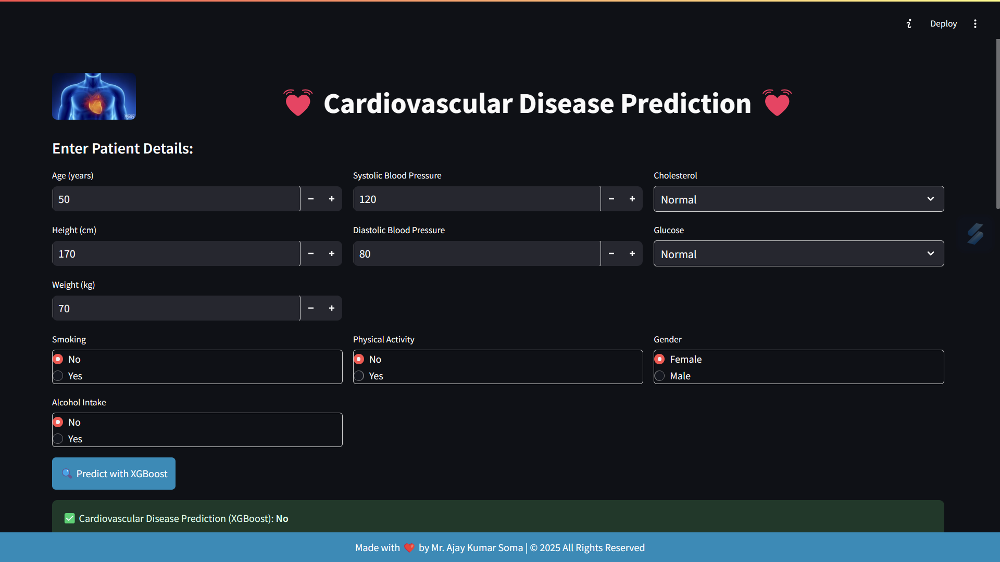

📌 Overview
The Cardiovascular Disease Prediction application is a machine learning-based tool built with Streamlit to predict the likelihood of cardiovascular disease using patient data. The model used for prediction is XGBoost, a powerful gradient-boosting algorithm.
🏗 Features
- User Input Form: Users can enter patient details such as age, blood pressure, cholesterol level, glucose level, and lifestyle habits.
- Machine Learning Model: Uses a pre-trained XGBoost model for predictions.
- Data Scaling: Standardized input data using Scikit-Learn's StandardScaler.
- Real-time Prediction: Provides instant prediction results on cardiovascular disease likelihood.
📊 Visualization
- Confusion Matrix for model performance evaluation.
- Feature Importance chart for understanding influential features.
- Model Accuracy display.
🛠 Technologies Used
- Python
- Streamlit (for UI)
- XGBoost (for prediction)
- Pandas & NumPy (for data processing)
- Matplotlib & Seaborn (for visualization)
- Scikit-learn (for data scaling & evaluation)
📊 Model Details
- Algorithm: XGBoost
- Performance:
- The accuracy of the model is displayed in the app.
- Confusion matrix helps in assessing model performance.
- Feature importance helps in understanding key health factors.
📸 Screenshots

🤝 Contributors
Chaotic Minds
📜 License
This project is licensed under the CC BY-NC 4.0 License. You may not use it for commercial purposes without permission.
⚠️ Disclaimer
This model provides predictions based on statistical analysis and should not be used as a substitute for professional medical advice. Always consult a healthcare professional for medical concerns.